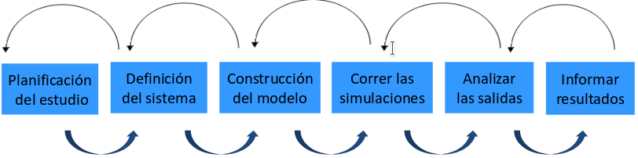
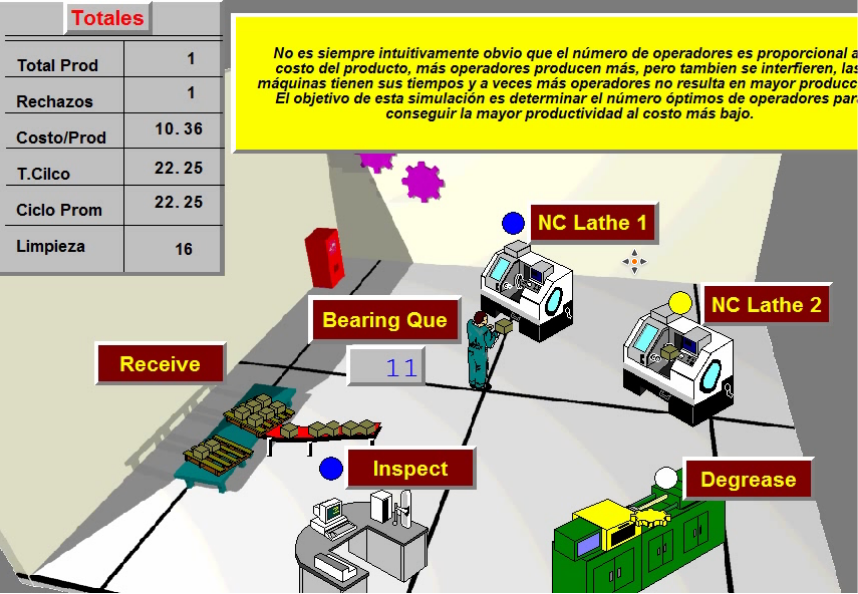
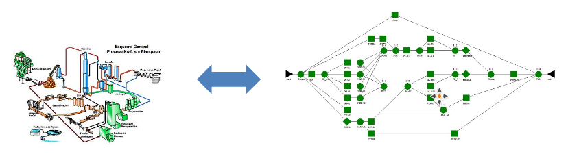

<section id="services">
    <div class="container">
        <div class="row">
            <h1 class="text-muted">INVESTIGACIÓN DE OPERACIONES</h1>
            <h2 class="service-heading">Modelación dinámica de los procesos productivos y logísticos.</h2>
            <p class="text-muted">“La simulación es el proceso de diseñar un modelo de un sistema real y llevar a término
                    experiencias con él, con la finalidad de comprender el comportamiento del sistema o
                    evaluar nuevas estrategias -dentro de los límites impuestos por un cierto criterio o un
                    conjunto de ellos - para el funcionamiento del sistema”
                    
                    Mediante simulación podemos calcular valores de variables y proyectar resultados en
                    un periodo de tiempo.
                    
                    El uso de modelos matemáticos y la simulación mediante software cobra fuerza en la
                    medida que los sistemas se hacen más complejos y se multiplica la cantidad de
                    variables que intervienen en los resultados.
                    
                    Con un modelo, el análisis de un problema complejo se simplifica, reduciéndose a
                    realizar una adecuada representación de los componentes que intervienen y la forma
                    cómo interactúan entre sí.
                    
                    Una simulación ayuda a resolver aspectos relacionados con el diseño de un nuevo
                    sistema o con la modificación de un sistema existente.</p>
        </div>
        <hr/>
        <div class="row">
                <h2 class="service-heading">ETAPAS EN LA CONSTRUCCIÓN DE UN MODELO</h2>
                <p class="text-muted">Para simular un proceso se requiere más que sólo saber cómo utilizar un software de simulación.
                    Un estudio de simulación debe abordarse como un proyecto, considerando las siguientes etapas referenciales:
                    <br/>
                    
                    <br/>
                    
        
        </div>
        <hr/>
        <div class="row">
            <h2 class="service-heading">Modelación de confiabilidad y vulnerabilidad de procesos.</h2>
            <p class="text-muted">
            
            Un modelo de confiabilidad es una herramienta útil para representar el desempeño de una planta o proceso, permite:</p>
            <ul class="list">
            <li class="list-item">Estimar la capacidad real de producción (unidades por periodo, ton/h, …)</li>
            <li class="list-item">Disponibilidad, confiabilidad y mantenibilidad.</li>  
            <li class="list-item">Costo de  mantenimiento.</li>  
            <li class="list-item">Consumo de repuestos.</li>                
            </ul>
        </div>
</section>
